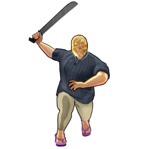

Steven
背景

你是否注意过，无生命的物件有多常陪在你身边？你的床从未站起来逃走，你的剑永远不会试图挣脱你的手，你的杯子永远会装着你的饮料。有人也许只会说这是常识，但对某些人来说，感受并不一样。Steven 在人生最黑暗的时刻获得了顿悟。煎饼一直都在他身边。无论是为了他的饥饿、糟糕的夜晚，还是他只是需要一个说话对象。煎饼从未抛弃他。于是 Steven 把他最爱的煎饼 Michael 戴在脸上，并发誓保护自己所属之地。
Steven 没有高等能力，没有战斗训练，没有超出常人的异常魔法调谐，什么都没有。我们最可能得出的结论是：名叫 Michael 的那块煎饼本身具有魔力，并通过 Steven 引导自己的力量。超越一切逻辑的是，煎饼的意志似乎给予了他足以匹敌中级战斗小队的力量。Jerosh 少校曾建议在类似“煎饼条件”下训练地下城探索部队，并因此被不名誉退役。
策略
Steven 战斗由 2 个子阶段组成：常规形态和燃烧形态。
常规形态下，Steven 会打出高伤害斩击，并布置糖浆池。站在糖浆中会叠加 Sticky 减益。
HP 降至 50% 时，Steven 会进入燃烧状态，使所有招式附加额外火焰伤害，并有概率触发 Burn 减益。他的糖浆招式也会射出更多糖浆池。
统计
基础 HP：8600
伤害：物理和火焰
可以施加 STICKY 状态效果。
该 Boss 有两个阶段。
| 属性 | 抗性 |
|---|---|
| 物理 | 中性 (1x) |
| 火焰 | 抗性 (0.75x) |
| 冰霜 | 弱点 (1.25x) |
| 电击 | 中性 (1x) |
| 光耀 | 抗性 (0.5x) |
| 暗影 | 弱点 (1.5x) |
| 毒 | 中性 (1x) |